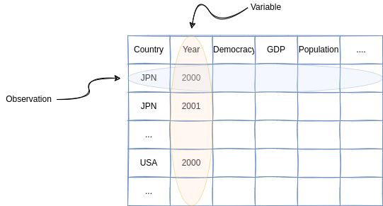

2 データフレーム
次章以降、当面の間はGapminderのデータを扱います。データの読み込み方はややこしいので後ほど扱うとして、今回はパッケージを使ってデータを読み込みます。
パッケージとは、スマートフォンにおけるアプリのようなもので、様々な追加機能を含んでいるものです。これらをインストールし、読み込むことでR/Pythonでの分析の幅が格段に広がります。世界中でパッケージが開発され、無料で公開されており、この拡張性がR/Pythonの強みと言って差し支えないでしょう。
また、データ分析において最もポピュラーな形式であるデータフレームについても解説します。
2.1 パッケージのインストール
スマホのアプリと同様にパッケージは最初に（そして一回だけ）インストールする必要があります。今回はgapminderという名前のパッケージをインストールします。
2.1.1 R
Rではinstall.packages("...")という関数を実行するとパッケージをインストールできます。ただ、RStudio (posit Studio) を使っている場合は、（初期設定では）画面右下のPackagesタブのInstallボタンをクリックしてインストールするのが楽でしょう。
2.1.2 Python
Pythonの場合は用いているパッケージマネジャーによって方法が異なります。例えば、Google Colaboratoryの場合はpipを使って管理をしています。pip install ...コマンドでインストールできます。
- 文頭に
!をつけることを忘れないでください。これは、Pythonコードではなくbashコマンドとして実行する目印です。 - Anacondaなどを利用している場合は
condaを使います。
2.2 パッケージの読み込み
パッケージのインストールは最初の一度で十分ですが、利用する度に読み込む必要があります。もし読み込みができない場合はパッケージのインストールに失敗している可能性が高いです。
Rではlibrary(...)関数を用いて、パッケージを読み込みます。
Pythonではimport ...コマンドを用いて、パッケージを読み込みます。
2.3 パッケージの使用
さて、これでGapminderのデータを読み込むことができました。データの中身を確認してみましょう。
Rではパッケージgapminderを読み込んだ際に、オブジェクトgapminderを呼び出しています。
# A tibble: 1,704 × 6
country continent year lifeExp pop gdpPercap
<fct> <fct> <int> <dbl> <int> <dbl>
1 Afghanistan Asia 1952 28.8 8425333 779.
2 Afghanistan Asia 1957 30.3 9240934 821.
3 Afghanistan Asia 1962 32.0 10267083 853.
4 Afghanistan Asia 1967 34.0 11537966 836.
5 Afghanistan Asia 1972 36.1 13079460 740.
6 Afghanistan Asia 1977 38.4 14880372 786.
7 Afghanistan Asia 1982 39.9 12881816 978.
8 Afghanistan Asia 1987 40.8 13867957 852.
9 Afghanistan Asia 1992 41.7 16317921 649.
10 Afghanistan Asia 1997 41.8 22227415 635.
# ℹ 1,694 more rowsPythonではパッケージgapminderの中にオブジェクトgapminderが入っています。
country continent year lifeExp pop gdpPercap
0 Afghanistan Asia 1952 28.801 8425333 779.445314
1 Afghanistan Asia 1957 30.332 9240934 820.853030
2 Afghanistan Asia 1962 31.997 10267083 853.100710
3 Afghanistan Asia 1967 34.020 11537966 836.197138
4 Afghanistan Asia 1972 36.088 13079460 739.981106
... ... ... ... ... ... ...
1699 Zimbabwe Africa 1987 62.351 9216418 706.157306
1700 Zimbabwe Africa 1992 60.377 10704340 693.420786
1701 Zimbabwe Africa 1997 46.809 11404948 792.449960
1702 Zimbabwe Africa 2002 39.989 11926563 672.038623
1703 Zimbabwe Africa 2007 43.487 12311143 469.709298
[1704 rows x 6 columns]- Pythonではパッケージ名のあとに
.をつけて、パッケージ内のデータや関数にアクセスします。分かりにくいですが、gapminder.gapminderというのは「gapminderというパッケージの中のgapminderというデータ」という意味です。
2.4 データフレーム
これらのオブジェクトをデータフレームと呼びます。データフレームは横（行）が観察 (observation) で、縦（列）が変数 (variable) になります。

- しばしば、表形式 (tabular) データ、構造化データ、関係データなどとも呼びます。
Gapminderのデータで言えば、観察はある年のある国で、変数は国名、大陸名、年、平均寿命、人口、一人あたりGDPとなっています。このような形式のデータは社会科学のデータ分析で標準的なものであり、当面の間はデータフレームの分析を扱います。
なお、データフレームの全体を表示するのは冗長なので、冒頭だけを表示させることができます。
# A tibble: 6 × 6
country continent year lifeExp pop gdpPercap
<fct> <fct> <int> <dbl> <int> <dbl>
1 Afghanistan Asia 1952 28.8 8425333 779.
2 Afghanistan Asia 1957 30.3 9240934 821.
3 Afghanistan Asia 1962 32.0 10267083 853.
4 Afghanistan Asia 1967 34.0 11537966 836.
5 Afghanistan Asia 1972 36.1 13079460 740.
6 Afghanistan Asia 1977 38.4 14880372 786. country continent year lifeExp pop gdpPercap
0 Afghanistan Asia 1952 28.801 8425333 779.445314
1 Afghanistan Asia 1957 30.332 9240934 820.853030
2 Afghanistan Asia 1962 31.997 10267083 853.100710
3 Afghanistan Asia 1967 34.020 11537966 836.197138
4 Afghanistan Asia 1972 36.088 13079460 739.9811062.5 それで？
残念ながらデータそれ自体からなにかしらの知見を得ることは難しいです。というか、データを眺めただけで何かが分かるのであれば、わざわざデータ分析をする必要はないように思えます。
ここからは、データを数値で表現したり（要約）、グラフを作ったり（可視化）することで特徴を把握する作業を学びたいと思います。